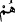
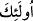
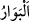
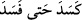
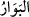

kötülüklerle tuzak kurarlar”, demektir. Bu tuzaklar, Kureyş kabilesinin –“Dâru’n-nedve”
denilen Mekke hükümet konağında parlamento tarafından- Peygamberimiz (s.a.)’e
kurduğu tuzaktır. Bağlayıp prangaya vurularak esir ve tutsak etmek yahut öldürmek yahut
ülkeden çıkarıp sürgün etmek seçeneklerinden biri üzerinde görüş beyan ederler.
Nitekim Allah Teâlâ onlardan hikaye ederek şöyle buyuruyor: “Hatırla ki, kâfirler seni
tutup bağlamaları veya öldürmeleri yahut seni (yurdundan) çıkarmaları için sana
tuzak kuruyorlardı. Onlar (sana) tuzak kurarlarken Allah da (onlara) tuzak
kuruyordu. Çünkü Allah tuzak kuranların en iyisidir” (el-Enfâl 8/30).
Burada “__WORD__” zamiri yerine “__WORD__ şeklinde ism-i işâret kullanılması, şer ve fesad
konusunda bu hâinlerin diğer müfsidlerden çok daha ileride ve bu konuda meşhur
olduklarını bildirmek içindir. “__WORD__, bozukluğun son derece ileri olmasını ifâde eder.
Bu kesat ve kötülüğün çok olması fesat ve bozukluğa götürdüğü için “__WORD__ yâni
“o kadar kesat ve kötü oldu ki nihayet fesada uğradı, bozuldu” denilir. Bu nedenle
onların helak ve fesadından “__WORD__ diye söz edilmiştir. Onların hile ve tuzaklarının helak
ve fesadından sonra Allah Teâlâ, onları helak ve fesada uğratmıştır. Zira Allah onları
Mekke’den çıkarmış, öldürmüş ve Bedir kuyusuna doldurmuştur. Allah Teâlâ,
Peygamber (s.a.)’e yalnız birini uygulayabildikleri bu tuzak ve hilelerin üçünü de
onlarda cem etmiştir.
Allah Teâlâ şöyle buyuruyor: “De ki: Herkes, kendi mizaç ve meşrebine göre iş
yapar. Bu durumda kimin doğru bir yol tuttuğunu Rabbiniz en iyi bilendir” (el-İsrâ
17/84). Başkalarına hile ve tuzak kuranlar, eşkiya bir topluluktur. Bunların işlerinin
sonu helak olmaktır. Güzel sözler ve sâlih amellerin sahipleri ise iyi, mesud ve mutlu
topluluklardır. Bunların işlerinin sonu ise kurtuluştur.
Mücâhid ve Şehr b. Hûşeb der ki; âyette kastedilen riyâ ve gösteriş ehlidir. et-
Te’vîlâtü’n-Necmiyye’de der ki: “Allah Teâlâ, bu kavli ile hile ve tuzakla hasenât ve
iyilikler izhar edip halkın kendilerini sâlih ve sâdık kullardan zannetmeleri için bozuk
ve kötü inançlarını gizleyenlere işâret etmektedir. İşte bunlar için şiddetli bir azap
vardır. Bunların azaplarının şiddeti, azaplarının katlanması şeklindedir. Zira bunlar
gizledikleri kötülüklerden dolayı bir azaba uğrarlar. Ayrıca bu kötülükleri iyilik olarak
izhar edip işin aslını gizleyerek hile yaptıkları için de azapları katlanır. Allah Teâlâ
şöyle buyuruyor: “Kötülüklerle tuzak kuranlara gelince, onlar için çetin bir azap
vardır ve onların tuzağı bozulur.” Yâni onların tuzakları kendilerini helak eder,
demektir.”
Kerâmetler ve iyilikler doğru muâmelelerde ortaya çıkar. Bayezid-i Bistâmî (k.s.)
der ki: “Bir gece ev aydınlandı. Dedim ki: “Eğer şeytansa ben ondan daha yüceyim,
üstün himmet sahibiyim. Zira o bana tamah eder. Eğer Senin katından ise, bırak kulluk
sarayından kerâmet sarayına geçeyim.” Hak yolunda ihlasla hizmet etmek, nurların ve
sırların inkişaf ve zuhûruna vesîledir. Denilir ki îman, temenni ile değildir. Yâni îmanda
tasdik ile birlikte amel de olmalıdır. Bu tasdikin hakikati ise muâmelenin doğruluğuna